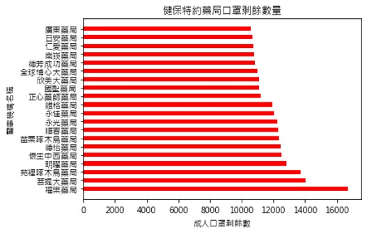
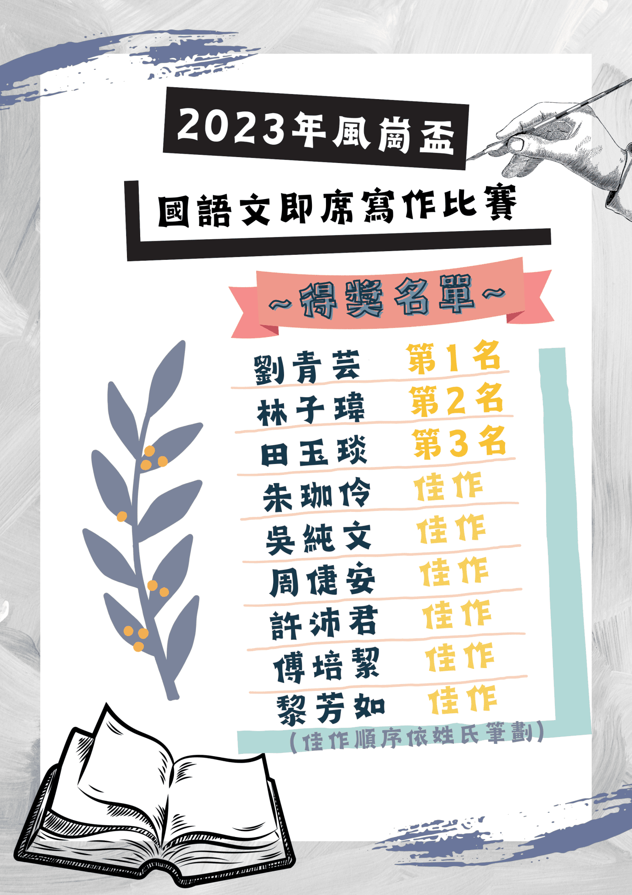
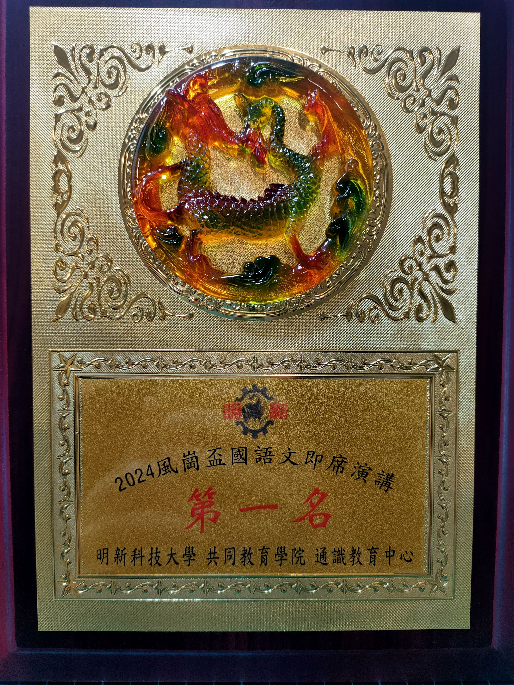

應用中文
主題：達摩的生平事蹟介紹&達摩在文本中的涵義
主題：達摩的生平事蹟介紹&達摩在文本中的涵義
此份報告是奚淞的一篇文章《孩子，我在未來的街頭等你》，裡面提到一位老畫師畫達摩，希望藉這個達摩告訴孩子人生上遇到的事，因此老師讓我們介紹這位達摩，讓大家知道達摩的生平事蹟，我在此份報告當中擔任組長一職，透過每週的會議，檢核組員的報告進度，並且一起和組員共同討論。
應用中文
主題：400秒簡報演講
主題：400秒簡報演講
一位大學生畢業需具備一個人在台上，做400秒
的獨自演講，這次透過應用中文課，老師讓我們在課
堂中發揮，我在報告當中擔任組長一職，也是上台報
告的報告人，其中最困難的是，有時會算不準秒數，
有時會講得過多，無法正確的抓穩報告時間，透過不
斷的練習，我慢慢練習到各張簡報所抓取的重點，可
以達成400秒簡報。
大學生生涯發展
主題：公務員專題報告
主題：公務員專題報告
此份報告是我們針對大學生未來畢業想從事的職業中，做一份公務員的專題報告，介紹了公務員的體系、透過什麼管道可以進入公部門、高普考的考試分類、考試通過後的分發流程、公務員常見的Q&A，藉由此份報告，幫助想從事公務員的同學，可以讓他們更了解公家機關的體系，也可以讓大家了解為什麼早期被稱為「鐵飯碗」的職業。

用Python程式進行繪製圖表
利用Python程式語言進行open data的資料分析，做出各地區在疫情期間的各診所口罩剩餘數量，主要是可以讓民眾透過分析出來的圖表，可以了解各個診所是否還有口罩庫存，由於外在有病毒環境，不移長久時間都待在室外，為了避免長時間在外找尋口罩，因此做出了口罩剩餘數量的分析圖，藉此學會Python的大數據分析功能。
人工智慧概論
主題：AI在生活中的應用
主題：AI在生活中的應用
AI在生活中是不可或缺的好朋友，隨著ChatGPT的到來，現在每個人對於AI都非常重視，
尤其你不了解AI，那你有可能就會被AI打敗，因此，我們這組做了一項AI在生活中可以應用的項目，透過簡報分享，讓大家了解AI，
究竟在我們生活當中，已經無所不在了，或許我們可能無法感覺到，但你真正碰觸了它之後，你就會發現它的神秘吸引力之處。
教育未來
主題：SDGs4 優質教育介紹&案例
主題：SDGs4 優質教育介紹&案例
永續議題是目前每個人都需要去重視的議題，我
們這組選擇了聯合國提出的17項目標的優質教育，利
用課堂中，老師教授我們的教育跟未來學相關知識，
搭配上聯合國提出的相關說明，做出一份可以提供給
第一線老師們教學的參考報告，讓老師結合新興科
技，搭配上學科的知識，提起學生學習的動機及興
趣，讓學習可以增添不少色彩。

競賽名稱：風崗盃國語文即席寫作比賽
在這次的即席作文比賽中，題目是我最難忘的一件事或一個人，我描述的是我高中畢業後，遇到一位貴人，他願意幫助我一些事情，讓我很感動，我把事情的來龍去脈運用了開門見山法書寫在這次的作文比賽中，不斷地回想起以前發生的事情，也令人懷念高中畢業時，可以遇到一位貴人，幫助我完成我尚未達成的人生目標，心存感謝！

競賽名稱：風崗盃國語文即席演講比賽
在這次的演講比賽中，我獲得國文老師的推薦
去參加此比賽，口條能力在未來職場上非常注重的
一件事，在這幾次不斷的訓練當中，如何在詞語中
能夠字字到位，傳達更精準的意思，搭配上溝通的
三要素，才能展現文字的魅力，讓人可以被你的文字內容給吸引住，展現有條不紊、言之有物，把你想表達的東西都給傳達出來
活動名稱：113-114年教育部雙語數位學伴計畫-實體相見歡
在這次的相見歡當中，我帶領的班級為國小五年級的學生，每次線上上課，學生都很活潑，也很開心，而身為大學伴角色的我們，都希望可以讓
學生輕鬆學英文，樂在其中，因此在見面會當天，我們設計了一連串的遊戲搭配著課程的英文，讓孩子邊玩邊學習，也利用的即將到來的端午節，
讓學生親自做香包，當作見面禮，送給他們。